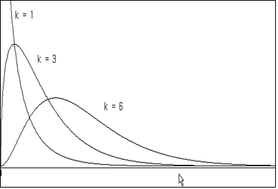

6장 표본 통계량의 분포와 추정
🎲 🎴 ♥ ♦ ♣ ♠
6.2 표본평균의 표집분포와 모평균의 추정
6.3 표본분산의 표집분포와 모분산의 추정
6.4 표본비율의 표집분포와 모비율의 추정
6.5 표본의 크기 결정
[6장 pdf]
현대통계학의 힘은 적은 수의 표본을 가지고 아주 큰 모집단의 특성을 예측할 수 있는 데 있다. 이 장에서는
- 간단한 표본추출방법인 단순임의추출법
- 모든 가능한 표본평균들의 분포
- 모든 가능한 표본분산들의 분포
- 모든 가능한 표본비율의 분포
를 살펴보고 이를 바탕으로 모집단의 평균, 분산, 비율을 추정하는 방법을 설명한다.
그리고 표본크기의 결정 방법을 설명한다.
6.1 표본의 추출
통계조사의 대상이 되는 집단, 즉, 모집단은 일반적으로 아주 크다. 그러므로, 전체 모집단을 모두 조사하는 것은
엄청난 비용과 시간을 필요로 한다. 그래서 모집단에서 일부를 추출한 표본을 이용하여 전체 모집단의 속성을
예측하는 것을 추측통계(inferential statistics)라 한다. 그러나 모집단의 조사결과와 표본의
조사결과는 차이가 있기 마련이다. 이러한 차이를 줄이기 위해 표본의 여러 가지 추출 방법이 연구되어 왔는데,
이 중 많이 사용되는 추출법은 모집단의 모든 원소가 표본으로 뽑힐 확률이 같은 단순임의추출법
(simple random sampling)이다. 단순확률추출법이라 부르기도한다.
☞ 단순임의추출법(Simple Random Sampling)
모집단의 모든 원소가 표본으로 뽑힐 확률이 같도록 표본을 추출하는 방법
단순임의 표본추출 시 한번 추출한 원소를 다시 모집단에 포함시키는
복원추출(with replacement )이나,
추출된 원소를 다시 모집단에 넣지 않는
비복원추출(without replacement) 모두 가능하나 실제 거의
모든 표본추출은 비복원추출로 이루어진다.
표본추출시 모집단의 각 원소가 표본으로 뽑힐 확률이 같도록 하려면 어떠한 수단이 필요한데 대개
난수표(random number table)를 많이 사용한다. 난수표란, 0에서 9까지의 숫자를 특별한 규칙성이나
편중성이 없이 흩어 놓은 표이다. 최근에는 컴퓨터로 [0, 1] 균등분포를 이용한 난수 생성을 활용한다.
『eStatU』를 이용하여 단순임위추출을 위한 난수를 생성하여보자.
🎲 예 6.1
어느 학급의 학생수가 50명이다. 이 중에서 3명의 학생을 비복원으로 단순임의 추출하고자 한다. 『eStatU』를 이용하여 추출하여 보자.
풀이
『eStatU』 주메뉴에서 ‘확률난수 생성’을 선택하면 [그림 6.1]의 확률난수 생성창이 나타난다. 여기서 ‘균등분포 정수형 (비복원추출)’을 선택하고 균등분포의 범위를 [1, 50], 자료수 n = 3을 입력한 후 [실행] 버튼을 누르면 그림과 같이 세 개의 난수가 생성된다.
[Random Number Generation]
[그림 6.1] 『eStatU』의 확률난수 생성
6.2 표본평균의 표집분포와 모평균의 추정
표본평균의 분포 (중심극한정리; Central Limit Theorem)
모집단이 평균 μ, 분산 \( σ^2 \)인 정규분포가 아닌 임의의 분포일 때 표본의 크기 \(n\)이 충분히 큰 표본을
단순임의 복원추출하면 표본평균들의 분포는 다음과 같은 특성을 갖는다.
1) 모든 가능한 표본평균들의 평균, \(\small μ_{\overline X} \),은 모평균 μ와 같다.
(즉, \(\small μ_{\overline X} = μ \) )
2) 모든 가능한 표본평균들의 분산, \(\small σ_{\overline X}^2 \),은 모분산을
\(n\)으로 나눈 값이다. (즉, \(\small σ_{\overline X}^2 = \frac {σ^2}{n} \) )
3) 모든 가능한 표본평균들의 분포는 근사적으로 정규분포이다.
위의 사실을 간단히 \(\small \overline {X} \sim N(μ, \frac {σ^2}{n} ) \)로 적기도 한다..
🎲 예 6.2
주메뉴에서 '표본평균의 분포 시뮬레이션'을 선택하면 [그림 6.2]와 같은 창이 나타난다. 여기서 모집단의 분포형태 세 가지 중에서 하나를 선택하고 표본크기 세 가지를 입력 한 후 [실행] 버튼을 누르면 그림과 같이 표본평균의 분포 세 가지가 나타난다.
풀이
[Sampling Distribution of Sample Means]
[그림 6.2] 『eStatU』의 중심극한정리 시뮬레이션
모평균의 추정
표본조사를 실시하면 모집단에서 단지 한 세트의 표본만을 추출하여 모평균과 같은 모집단의 특성값을
추정(estimation)한다. 일반적으로 추출된 표본의 표본평균을 모평균의 대한 추정값으로 생각하게 되는데
과연 수없이 가능한 표본들 중 한 세트의 표본에서 얻은 값이 모평균을 잘 예측할 수 있을까?
누구나 한번쯤은 생각하는 질문인데 앞 절에서 연구한 표본평균의 표집분포가 이 질문에 대한 해답이다. 즉, 모집단이
어떠한 분포이든지 표본의 크기가 충분히 크다면 모든 가능한 표본평균들은 모평균 주위에 정규분포 모양을 하면서
밀집하게 된다. 따라서 우리가 얻은 표본 한 세트의 평균은 대개 모평균과 가깝고, 제일 나쁜 경우라도
모평균과의 차(오차라고 함)가 크지 않아 예측이 가능하다고 대답할 수 있다. 표본의 크기가 크면 클수록
표본평균의 표집분포는 더욱 밀집되므로 이 오차는 줄어들게 된다.
관측된 표본평균의 하나의 값이 모평균의 추정값이라고 하는 것을 모평균의 점추정(point estimation,
하나의 점(수치)으로 추정한다는 뜻)이라 한다. 점추정과 달리 구간으로 모평균을 추정하는 것을 구간추정
(interval estimation)이라 한다.
모집단이 정규분포이고 모분산 \(\sigma^2\)을 아는 경우 모평균 μ 의 100(1-α)% 구간추정은 다음과 같다.
$$\small
\left[ \overline X - z_{\alpha/2} \frac {\sigma} {\sqrt{n}} ,\;\; \overline X + z_{\alpha/2} \frac {\sigma} {\sqrt{n}} \right]
$$
여기서 (1-α) 또는 100(1-α)%는 신뢰도(confidence level)라고도 하는데,
이 구간공식에 의해 산출된 모든 구간들 중에서 모평균이 포함되어 있을 구간들의 확률을 뜻한다. α는
신뢰구간 공식에 의해 산출된 구간들이 모평균을 포함하지 않는 확률을 의미하는데 대개
0.01 또는 0.05를 사용한다. \( z_{α} \)는 표준정규분포의 우측 100 α% 백분위수이다.
수식으로 표현하면 \(P(Z > z_{α} ) = α \)가 성립된다. 예를 들면
\( z_{0.025;} \) = 1.96, \( z_{0.95} \) = -1.645, \( z_{0.005} \) = 2.575. 등이다.
🎲 예 6.3
『eStatU』를 이용하여 구간추정의 의미를 실험하여 보자.
풀이
주메뉴에서 '모평균 신뢰구간 시뮬레이션'을 선택하면 [그림 6.3]과 같은 창이 나타난다. 여기서 표본크기, 반복수 그리고 신뢰도를 선택한 후 [실행] 버튼을 누르면 그림과 같이 반복수 만큼의 신뢰구간이 계산되고 이 구간이 모평균(0)을 포함하면 초록색, 아니면 빨강색으로 구분된다.
[Confidence Interval Experiment]
[그림 6.3] 『eStatU』를 이용한 구간추정 의미 실험
t 분포를 이용한 모평균의 구간추정
대개 모분산은 모르는 경우가 많아 위의 구간추정 공식은 현실적이지 못하다. 모집단이 정규분포이고 모분산
\(\sigma^2\)을 모르는 경우 모평균 μ 의 100(1-α)% 구간추정은 t 분포를 이용하여 다음과 같이 구한다.
$$\small
\left[ \overline X - t_{n-1;\alpha/2} \frac {S} {\sqrt{n}} ,\;\; \overline X + t_{n-1;\alpha/2} \frac {S} {\sqrt{n}} \right]
$$
여기서 n은 표본의 크기이고 S는 표본의 표준편차이다.
t 분포함수(t distribution)는 아일랜드의 한 양조회사에서 근무하던 통계학자 W. S. Gosset에 의해 연구되었는데 스튜던트(Student)라는
가명으로 1907년에 연구결과를 발표하였다. t 분포는 자유도(degree of freedom)라는 모수에 따라
\(t_1 , t_2 , ... \) 등 무수히 많은 분포가 존재한다. 자유도가 n인 t 분포를 \(t_n\) 또는 \(t(n)\)으로
표시하고, 우측 100 α 백분위수를 \(t_{n;α}\)로 표시한다.
t 분포는 자유도가 증가할수록 표준정규분포에 가까워지는데, 대개 자유도가 100이 넘으면 비슷하다. 이것이 대표본일 때
정규분포를 사용하여 근사적으로 신뢰구간을 구하는 이유이다.
🎲 예 6.4
『eStatU』를 이용하여 t 분포의 확률을 구해 보고 표준정규분포와 비교해 보자.
풀이
『eStatU』주메뉴에서 't 분포'를 선택하면 [그림 6.4]와 같은 화면이 나타난다. 여기에서 자유도(df)를 3으로
선택하고 N(0,1)을 체크하면 그림과 같이 t(3) 분포와 표준정규분포를 비교할 수 있다.
t 확률변수의 구간 [a,b]에 대한 P(a ≤ X ≤ b) 확률계산과, 주어진 확률 p에 대한 백분위수
(즉, P(X ≤ x) = p 가 되는 백분위수 를 쉽게 계산할 수 있다.
[t Distribution]
[그림 6.4] t 분포함수의 확률 및 백분위수 계산
『eStatU』의 모평균 추정
『eStatU』를 이용하면 쉽게 모평균 구간추정을 할 수 있고 표본의 크기나 신뢰도의 변화에 따른 구간너비를 관찰 할 수 있다.
🎲 예 6.5
금년도 대학교 남자 신입생의 신장을 조사하기 위하여 10명의 표본을 단순임의추출하여 조사한 자료가 다음과 같다. 『eStatU』을 이용하여 대학 신입생의 신장 모평균에 대한 95% 구간추정을 하여 보자.
171 172 185 169 175 177 174 179 168 173
풀이
『eStatU』주메뉴에서 '추정: 모평균 신뢰구간'을 선택하면 [그림 6.5]와 같은 화면이 나타난다.
[표본자료]에 데이터를 입력하고 신뢰도와 표집분포를 선택한 후 [실행] 버튼을 누르면 그림과 같이
신뢰구간이 계산되고 화면에 표시된다. 아래쪽 빨강색 신뢰구간은 표본 크기 n과 신뢰도를 변화시키면서
신뢰구간의 너비를 관찰할 수 있다.
[ ]
[그림 6.5] 『eStatU』모평균 신뢰구간 추정
6.3 표본분산의 표집분포와 모분산의 추정
표본분산의 표집분포
모집단이 모분산 \(\sigma^2\)인 정규분포를 따를 때 크기가 n인 표본을 단순임의 복원추출하면, 표본분산 \(S^2\)의
특정한 상수곱 \(\frac{(n-1)S^2}{\sigma^2} \)은 자유도가 (n-1)인 카이제곱분포(\(\chi^2\) distribution)를 따른다.
$$
\frac {(n-1)S^2}{\sigma^2} \;\; \sim \;\; \chi^2_{n-1}
$$
카이제곱분포는 자유도(degree of freedom)라는 모수에 따라 자유도 1인 카이제곱분포 (\(\chi^2_{1}\)로 표시),
자유도 2인 카이제곱분포 (\(\chi^2_{2}\)로 표시), ... , 자유도가 27인 카이제곱분포(\(\chi^2_{27}\)로 표시), ...
등으로 무수히 많은 분포를 갖는다. 자유도가 n인 카이제곱분포를 \(\chi^2_{n}\) 또는 \(\chi^2 (n)\)
등으로 표시하고, 우측 100 α 백분위수를 \(\chi^2_{n;α}\)로 표시한다.
카이제곱분포는 비대칭분포인데 [그림 6.6]은 여러 가지 자유도에 대한 카이제곱분포의 그림이다.

[그림 6.6] 여러 자유도에 대한 카이제곱분포
🎲 예 6.6
『eStatU』를 이용하여 \(\chi^2\) 분포의 확률을 구해 보자.
풀이
『eStatU』주메뉴에서 '\(\chi^2\) 분포'를 선택하면 [그림 6.7]과 같은 화면이 나타난다. 여기에서 자유도(df)를
선택하고 [실행] 버튼을 누른다. \(\chi^2\) 분포함수가 그려지고 확률변수의 구간 [a,b]에 대한 P(a ≤ X ≤ b) 확률계산과,
주어진 확률 p에 대한 백분위수(즉, P(X ≤ x) = p) 가 되는 백분위수 x를 쉽게 계산할 수 있다.
[ ]
[그림 6.7] 카이제곱분포함수의 확률 및 백분위수 계산
모분산의 추정
모집단이 정규분포를 따르는 경우 모분산(\(\sigma^2\))의 100(1-α)% 신뢰구간은 다음과 같다.
$$
\left[ \frac {(n-1)S^2}{\chi^2_{n-1: α/2} }, \frac {(n-1)S^2}{\chi^2_{n-1: 1-α/2} } \right]
$$
『eStatU』를 이용하면 쉽게 모분산 구간추정을 할 수 있고 표본의 크기나 신뢰도의 변화에 따른 구간너비를 관찰 할 수 있다.
🎲 예 6.7
금년도 대학교 남자 신입생의 신장을 조사하기 위하여 10명의 표본을 단순임의추출하여 조사한 자료가 다음과 같다. 『eStatU』을 이용하여 대학 신입생의 신장 모분산에 대한 95% 구간추정을 하여 보자.
171 172 185 169 175 177 174 179 168 173
풀이
『eStatU』주메뉴에서 '추정: 모분산 \(\sigma^2\) 신뢰구간'을 선택하면 [그림 6.8]과 같은 화면이 나타난다. [표본자료]에
데이터를 입력하고 신뢰도를 선택한 후 [실행] 버튼을 누르면 그림과 같이 신뢰구간이 계산되고 화면에 표시된다. 아래쪽 빨강색
신뢰구간은 n과 신뢰도를 변화시키면서 신뢰구간의 너비를 관찰할 수 있다.
[ ]
[그림 6.8] 『eStatU』 모분산 구간추정
6.4 표본비율의 표집분포와 모비율의 추정
표본비율의 표집분포
모집단의 모비율을 \(p\)라 하자. 표본의 크기가 충분히 클 때 표본비율 \(\hat p\)의 표집분포는 근사적으로 평균이 \(p\), 분산이
\(\frac{p(1-p)}{n}\)인 정규분포이다.
$$
\hat p \;\;\sim \;\; N \left( p, \frac{p(1-p)}{n} \right)
$$
모비율의 추정
표본의 크기가 충분히 큰 경우, 모비율(\(p\))의 100(1-α)% 신뢰구간은 다음과 같다.
$$
\left[ \hat p - z_{α/2} \sqrt{\frac{\hat p (1-\hat p)}{n} }, \;\; \hat p + z_{α/2} \sqrt{\frac{\hat p (1-\hat p)}{n} } \right]
$$
🎲 예 6.8
어느 대학의 총 학생회장 선거에 입후보한 학생이 본인의 지지율을 알아보기 위하여 200명의 학생을 단순임의추출하여 질문하였더니 120명이 지지를 하였다. 『eStatU』을 이용하여 모집단의 지지율을 95%의 신뢰수준으로 구간추정을 하여 보자.
풀이
『eStatU』 주메뉴에서 '추정: 모비율 p 신뢰구간'을 선택하면 [그림 6.9]와 같은 화면이 나타난다. '표본크기' n = 200과
표본비율 \(\hat p\) = 0.6을 입력하고 신뢰도를 선택한 후 [실행] 버튼을 누르면 그림과 같이 신뢰구간이 계산되고 화면에 표시된다. 아래쪽 빨강색 신뢰구간은 n과 신뢰도를 변화시키면서 신뢰구간의 너비를 관찰할 수 있다.
[ ]
[그림 6.9] 『eStatU』 모비율 신뢰구간 추정
6.5 표본의 크기 결정
모평균 추정시 표본의 크기 결정
모집단이 정규분포이고 모분산 \(\sigma^2\)을 아는 경우 모평균 μ 의 100(1-α)% 구간추정은 다음과 같다.
$$\small
\left[ \overline X - z_{\alpha/2} \frac {\sigma} {\sqrt{n}} ,\;\; \overline X + z_{\alpha/2} \frac {\sigma} {\sqrt{n}} \right]
$$
이 때 \(z_{\alpha/2} \frac {\sigma} {\sqrt{n}}\) 를 모평균 μ 추정에서의 오차의 한계
(bound on the error of estimation)라고 한다 (오차의 한계를 최대허용오차(maximum allowable error)라고
부르기도 한다). 따라서 오차의 한계를 \(d\)로 하기 위한 표본의 크기는 다음 방정식을 \(n\)에 관하여 풀면 된다.
$$
z_{\alpha/2} \frac {\sigma} {\sqrt{n}} \;=\; d
$$
모평균 추정시 표본크기의 결정은 다음과 같다.
$$
n \; = \; \left[ \frac {z_{\alpha/2} \sigma } {d} \right] ^2
$$
『eStatU』를 이용하면 쉽게 모평균 추정시 표본크기를 계산할 수 있다.
🎲 예 6.9
어느 공장에서 생산되는 전구 수명의 표준편차가 대개 100시간이라고 한다. 전구의 평균수명을 95% 신뢰수준으로 추정하려고 하는데 오차의 한계가 20시간 이내가 되기 위한 표본의 크기를 『eStatU』을 이용하여 구하여 보자.
풀이
『eStatU』 주메뉴에서 '추정: 모평균 - 표본크기 n'을 선택하면 [그림 6.10]과 같은 화면이 나타난다.
'오차의 한계' d = 20, '모표준편차' \(\sigma\) = 100, 신뢰도 0.95를 입력한 [실행] 버튼을 누르면
그림과 같이 표본크기가 계산된다.
[ - n]
[그림 6.10] 모평균 추정을 위한 표본크기 계산
모비율 추정시 표본의 크기 결정
표본의 크기가 충분히 큰 경우, 모비율(\(p\))의 100(1-α)% 신뢰구간은 다음과 같다.
$$
\left[ \hat p - z_{α/2} \sqrt{\frac{\hat p (1-\hat p)}{n} }, \;\; \hat p + z_{α/2} \sqrt{\frac{\hat p (1-\hat p)}{n} } \right]
$$
따라서 오차의 한계를 \(d\)로 하기 위한 표본의 크기는 다음 방정식을 \(n\)에 관하여 풀면 된다.
$$
z_{\alpha/2} \sqrt { \frac {\hat p (1 - \hat p} {n} } \;=\; d
$$
모비율 추정시 표본크기의 결정은 다음과 같다.
$$
n \; = \; \hat p (1- \hat p) \left[ \frac {z_{\alpha/2} } {d} \right] ^2
$$
위 식에서 \(\hat p\)는 과거의 경험에 의해 추정된 값을 이용하기도 하고, 예비조사를 하여 추정하기도 한다.
하지만 모비율에 대해 전혀 정보가 없을 때는 \(n\)의 값이 최대가 되는 \(\hat p\) = 0.5 를 사용한다.
『eStatU』를 이용하면 쉽게 모비율 추정시 표본크기를 계산할 수 있다.
🎲 예 6.10
금년도 대통령 선거에 어느 후보의 지지율을 95% 신뢰수준으로 조사하려고 한다. 오차의 한계가
2.5% 이내가 되기 위한 표본의 크기를 『eStatU』을 이용하여 구하여 보자.
풀이
『eStatU』주메뉴에서 '추정: 모비율 p - 표본크기 n'을 선택하면 [그림 6.11]과 같은 화면이 나타난다. '오차의 한계' d = 0.025, '표본비율' = 0.5, 신뢰도 0.95를 입력한 [실행] 버튼을 누르면 그림과 같이 표본크기가 계산된다.
[ - n]
[그림 6.11] 모비율 추정을 위한 표본크기 계산